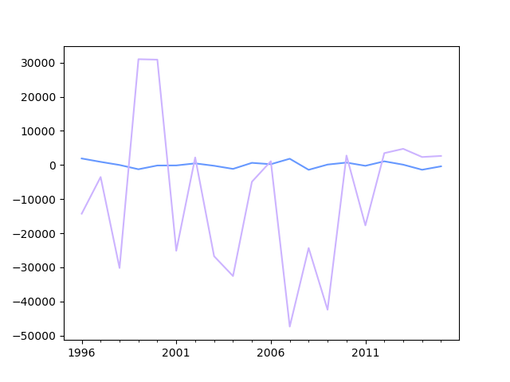

2P fagdag - Statistikkoppgaver
Du er elev 22 i klasse 2PB4 og har valgt oppgavenivå b.
Definisjon
Gjør rede for følgende begrep:
gjennomsnitt, kvartilbredde og median
Bruk av sentralmål
Finn median, gjennomsnitt og kvartilbredde for følgende verdier:
21.24 23.47 34.62 2.84 4.54 6.98 13.48 7.12 16.11 18.35 27.30 14.94 10.88 13.21 20.05
Frekvenstabell
Finn median, gjennomsnitt, kvartilbredde og standardavvik for dataene i frekvenstabellen under.
| Poeng | Frekvens |
|---|---|
| [0, 20> | 4 |
| [20, 40> | 5 |
| [40, 60> | 9 |
| [60, 80> | 1 |
| [80, 95> | 7 |
| [95, 100> | 4 |
Den nye læreren
På en skole jobber det i utgangspunktet 15 realfagslærere, som da hadde en gjennomsnittsalder på 32.0 år. Det begynner så en ny lærer på skolen, og brått blir gjennomsnittsalderen 32.1 år.
Hva er aldereden til den nye læreren?
Diagramtolkning
Diagrammet under viser visualiseringen av to datasett. Hva kan du si om sentral- og spredningsmål for de to i forhold til hverandre?

Histogrammet
Histogrammet under viser fordelingen av svar på en "hvor mange pastiller er det i krukka"-oppgave, hvor mange deltok?
- Ut fra verdiene i histogrammet over, hva vil du tro mengden pastiller i krukka var?
Kummulativ match
Under vises et stolpediagram og fire foreslåtte kummulative grafer. Hvilken av de fire alternativene tilhører dataene fra stolpediagrammet?
Foreslå visualisering
For hvert punkt under, hva slags diagram ville du valgt for å visualisere dataene? Begrunn valget ditt.
- Karakterfordelingen i en klasse etter en prøve (rundt 30 elever)
- Karakterfordelingen for en skole etter en heldagsprøve i norsk (rundt 600 elever)
- Gjennomsnittskarakteren for årets FIFA-spill for årene 1996 til 2017.
- Aldersfordelingen for de som ser på Dagsrevyen mer enn to ganger hver uke.
Skisser
For to av punktene i forrige oppgave, skisser hvordan en slik fordeling kan se ut.
Statistisk analyse
På en skole ble det gjennomført en 2P-prøve for et trinn. Poengene, som var fra 0 til 100, blei som vist under.
19 53 61 0 29 6 63 37 64 65 62 63 62 83 75 72 100 44 52 49 42 52 80 70 50 67 97 52 90 86 62 29 73 24 71 71 48 86 47 73 39 42 87 71 98 69 67 51 69 90 77 18 48 41 61 8 48 69 76 92 78 79 45 45 82 25 91 70
- Grupper dataene i en frekvenstabell hvor gruppene er [0, 20>, [20, 40>, [40, 60>, [60, 80>, [80, 95>, [95, 100].
- Finn gjennomsnittspoengene både via det grupperte materialet, og eksakt. Forklar eventuelle forskjeller på de to tallene.
- Vis dataene i et histogram.
Gruppene over viser til en typisk karakterinndeling. En av lærerne på skolen, ønsker å gjøre det litt vanskeligere å bestå,så alt under 25 poeng gir karakteren 1, men litt lettere å få karakteren 6, nå fra 90 poeng. Hvordan ville det påvirket karakterfordelingenpå trinnet?